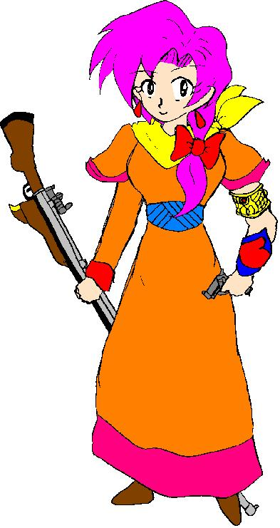

――華代ちゃんシリーズ＆いちごちゃんシリーズＷ外伝――
（ハンターストーリーランド＋α その４）
「夢御伽」
作：Zyuka
※「華代ちゃん」シリーズの詳細については、以下の公式ページを参照して下さい。
http://www.geocities.co.jp/Playtown/7073/kayo_chan00.html
＊「華代ちゃんシリーズ・番外編」の詳細についてはhttp://www.geocities.co.jp/Playtown/7073/kayo_chan02.html を参照して下さい
※「いちごちゃん」シリーズの詳細については、以下の公式ページを参照して下さい。
http://www.geocities.co.jp/Playtown/7073/Novels-03-KayoChan31-Ichigo00.htm
リンゴーン……リンゴーン！！
荘厳華麗な鐘の音が鳴り響く。
美しい教会――今日ここで、一つの式があげられる。
「遅刻遅刻！！」
一人の少女が急ぎ足でその教会の前の広場に向かっていた。
見たところ、１２、３歳ぐらい……中学生ぐらいの女の子だが、綺麗な洋服を着ている。そしてなぜか頭の上に黒い兎の耳がくっついている。
「急がなくっちゃ！」
少女は、首からかけた懐中時計で時間を確認、さらに急ぎ足になる。
と……
「遅かったな。りく」
１人の女性が、その少女を出迎える。二十歳前後の、長い髪を結い上げた綺麗な女性だ。美しいドレスを着て、まるでどこかのお姫様のよう……青みかかった緑色の瞳が特徴的。
「あ、千景！ ごめん、ちょっと準備にてまどちゃって……」
りくと呼ばれた少女は、千景と呼ばれた女性と共に歩き始める。
「まあ、無理もないか。今日は特別な日、だからな」
「……探偵の方はうまくいっているの？」
「ま、まあまあかな」
中学生ぐらいに見えるりくと、それよりはるかに年上に見える千景。だが二人は親友のように話している。
「あ、皆！」
やがて、りくと千景は、かつての仲間達を見つけた。あれから５年ほどたっているが、一人を除いて皆元気そうだ。
「元気そうだな」
かつてりく達の首領だった男は、りく達をチラッと見ると、再び持っていた紙片に目を落とした。
何でも、今日の式では司会をつとめる事になったとかで、かつての秘書の人に作ってもらった台本を、何度も反芻している。
「相変わらずかわいいわね、りくちゃん！」
そう言って、りくに抱きついてきたのは……
「やめてください。安土……いいえ、皇桃香さん！」
「う〜ん、いいじゃん今はダンナいないんだし〜」
結婚し、現在妊娠二ヶ月という皇桃香。しかし、以前と変わらずりくにちょっかいをかけてくる。
彼女のダンナは、今日は仕事でこれないらしい。
「なんか、昔と変わらないな……」
りくが昔を思い出して、ちょっとした感傷に浸ろうとしていた時。
バサァッ！！
「……きゃあ☆」
突然、スカートがめくられた。
「尻尾がある。やっぱ、りくネエだ」
りくのスカートをめくったのは、４、５歳ぐらいの……いつもは幼稚園に通っている男の子だ。今日は、七五三の時のような服装をしている。
「……龍也〜〜！！」
「なんか今日はおめかしし過ぎなんじゃないの？ 恋でもしたか？ りくネエ！」
「待てこら！！」
りくは悪ガキの龍也を捕まえようとするが、相手はちょろちょろと予想もできない動きをするんで捕まえにくい。まったく、父親に似て、逃げるのがうまい。
「こら、龍也」
りくが捕まえるに苦労している龍也を、あっさり捕まえた人物がいる。
「久しぶりですね。りく先輩」
「七瀬……自分の息子ぐらい、ちゃんと教育しておいてよ！」
「うちはのびのび自由に、が家訓なんですよ」
七瀬龍也の父、七瀬銀河は息子を抱き上げて言う。
「だから、龍也にも虹音にも、やりたいようにやれっていってるんです。ね、紫鶴」
「エエ…」
小さな女の子を抱いた銀河の妻・紫鶴がそう言う。
「あ、虹音ちゃん、少し大きくなったんじゃない？」
「おかげさまでね」
当の七瀬虹音は、きょとんとした表情でりくを見ている。兎の耳が、珍しいのだろうか？
「あ〜あ、ああいうのを見ていると、私も家庭を持ちたくなっちゃうな」
七瀬一家とりくの様子を見ていた、１人の女性が、そう言った。
フリフリのドレスを着て、かわいらしく装いっている、女性・半田双葉……
「おや、双葉…彼とはうまくいっていないのか？」
「まあね……実は彼が突然ボディビルディングに目覚めちゃって……」
「あ、そう……」
千景は双葉の…彼女にとっては深刻、他人にとってはどうでもいい悩みを聞き流しながら、あたりを見渡した。
かつての仲間達……これだけ集まると、ちょっとした同窓会だ。
３号……いや、藤美珊瑚女史や、水野さんや沢田さん！
かつてのハンター仲間達。
寿退職者のかつての２号から１２号、１３号、２３号、２４号、２６号に４６号……
ガイストに、半田葉子さん愛称よっこ……
七瀬龍也・虹音以外にも、子供がいる。小さな女の子……かつての２号の娘だ。
他にも、小学生バレリーナとして有名なかつての８号。
姫ちゃんもいる。
「あ、りくちゃん! 遅かったじゃない!」
「ほんと、待ってたんだよ」
りくと同年代の少女が二人……彼女達についてのコメントは控えよう。
皆が皆、美しい服を着て、それぞれ昔話に、そして今日行われる式についての話に、花を咲かせている。
ただ１人……五代秀作だけは、絶望の淵に沈んでいた。
「あ〜あ……昔の元気はどうしたのかしら？」
「あっはっは！！ 抜け殻抜け殻!!」
「まったくいくらショッキングな出来事だからといって、こんなめでたい日にそんな不機嫌そうな空気を作らないでくださいよ」
彼の様子を見た人々が、口々にそう言った。
「何でもいい……なんでもいいんだよ……」
悪口を言われても、彼のテンションがこれ以上下がることはない……
そんな所に、今日の主役の一人が現れた。
ほぉ……
誰からともなく、ため息が上がる。
純白のウェディングドレスを着たかつてのアイドル……
美しいヴェールをかぶり、軽く化粧をした顔は、満面の笑みを浮かべている。
「皆……ひさしぶり」
今日、結婚式をあげる少女は、美しい声で言った。
半田いちご……そう呼ばれるのも、今日が最後である。多分……
「綺麗な花嫁さんだ」
「わーい、花嫁さん、花嫁さん」
素直に感想を述べたのは子供達だ。他の大人たちは、複雑な表情で、言葉を選んでいる。
「……いちご先輩……仲人は任せてくださいね」
仲人役をかってでいた七瀬がいう。
「ブーケは私の方に投げてね」
「いいえ、私よ！！」
「あ〜ん、わたしもほしい〜」
適齢期に達した独身女性達の望みは、まさにそれだった。
「いちご……」
「りく……」
昔からの仲間である。それだけでつたわ……
「後でそれ、着させてね」
「あなたじゃ、サイズ合わないんじゃない？ それにしても、ウサ耳の花嫁って……」
花嫁を囲んで、大いに盛り上がる。
「う、うおおおお！！」
そんな中、五代が大声をあげて叫んだ。
「い・ち・ご……！！」
「……」
あたりに、一瞬の沈黙が訪れる。
「幸せに、幸せに、なれよ！！」
「ありがとう五代……」
「ううっ、ううっ……」
五代の目から、大粒の涙が留め止めもなくながれていく。
やがてもう１人の主役が現れた。
いちごが、生涯の伴侶に選んだ人物……それは…………
☆ ★ ☆ ★ ☆ ★ ☆ ★ ☆ ★ ☆ ★
「…………一体誰だっ！？」
そんな叫び声をあげて、いちごは飛び起きた。
ここはハンター組織のある一室…ハンター一号、半田いちごの部屋である。
ごく普通のパジャマを来たいちごが、ベットの上で荒い息を吐いていた。
「…………」
あたりを見渡す。まだ暗い室内。時計は、６：２０となっている。
「………夢？」
としか思えなかった。
俺が、俺が……結婚するなんてことはありえない！！
「そうだよ、夢だよ、夢なんだよ！！」
いちごは、そう自分に言い聞かせた。
「まったく、今日はなんて夢を見たんだ……」
バシャバシャ。
組織内の個室に、洗面所はない。共同洗面所まで行かなければ、顔を洗うことはできない。
とりあえず、ティーシャツにジーンズといういつもの格好に着替えて顔を洗う。頭をすっきりさせれば、あんな夢はすぐに忘れるはずだ。ちなみに、髪はまだ下ろしたまま。
でも、忘れようとしても、自分の花嫁姿はなかなか頭から離れなかった。
「あ、いちご……」
「うん、ああ、千景……早いね」
ハンター組織に居候している中学生探偵少女、浅葱千景……今朝はコートを着ていないので、お嬢様バージョンのほうだ。
「…？ なんだよ」
千景は、なぜか知らないがいちごをじっと見つめている。
「いや…貴女が、あまりにも、綺麗だったから……」
「は？ いつもと変わらないだろ？」
「いや、こっちのこと……忘れてください……」
そう言って千景はでていく。
「？」
いちごは、わけがわからないという表情で、千景が出て行った洗面所の出口を見ていた。
「あ、いちご♪」
「朝からテンション高いな、双葉」
入れ替わりで入って来たのは、必要以上にキャピキャピした女子高生、半田双葉だった。
そういえば昨日、何らかの仕事で組織に来てそのままおとまりとなった、とか何とか……
「あのね……いちご……」
「うん？」
「あなたが、結婚式をあげた時は私にブーケをちょうだいね！」
「はぁ！！ なんでおれが結婚しなきゃならないんだ！？」
今朝の夢もあいまって、声が１オクターブほど高くなるいちご。
「あはっ♪ ゴメン、ゴメン！！ ちょっと面白い夢を見てね」
「夢………？」
「うん、いちご。あなたが結婚する夢♪」
「は……」
まさか………
「あ、いちごちゃん？ どうしたの？」
「私達に、何か用？」
いつも以上ににこやかな水野さんと沢田さん。
いちごは、その二人に、今朝見た夢を聞いてみた。
結果は……
「何で……なんで？」
とりあえず、他のハンター達にも聞いてみた。３、１２、２３、２４、２７、４６……他の一般職員にも聞いてみた。あまり行きたくなかったが、ハンター組織の秘密警察にも行って、ガイスト達にも聞いてみた。
「どういうことなんだ……？」
この日、ハンター組織にかかわっている人間達が見た夢は、皆が皆、同じ物だった。
すなわち、５年後のいちごの結婚式……
「どうして、私が結婚してたんだろ？」
「綺麗だったぞ、いちご」
「ところで、誰と結婚したんだ？」
いちごが過度に聞きまくったせいだろうか？
その日の朝のうちに、全員が同じ夢を見たという事実は組織中に知れ渡った。
「うそだよな、あんな夢はうそだよな」
誰もがにこやかにいう中で、５号だけは涙を流しながらそう叫んでいた。
☆ ★ ☆ ★ ☆ ★ ☆ ★ ☆ ★ ☆ ★
「りく！！」
いちごにとって、こういう時には頼りになる仲間……ハンター６号こと半田りくの部屋に行く。しかしそこは、もぬけの殻だった。
「……あそこか……」
組織のすぐ近くにある公園……そこに設置されているブランコに、小さな人影が鎮座していた。
りくは何かがあったらよくここへ来るのだ。よくここのブランコに乗って夕日の中たそがれている。……今日は朝日だが。
「りく……！！」
「ああ、いちごか……」
「……お前、今朝どんな夢を見た!？」
「夢……ああ、とんでもなくいやな夢だったよ……」
どう見ても小学生くらいの女の子が、妙にふけた感じで言う。
「俺が……結婚するとか言う夢じゃなかったか……!？」
「何でそんなこと知っているんだ？」
「俺も見ているからだ！！ 俺だけじゃない！！ ３号達も皆見ているんだ！！」
「へエ……そうなんだ……」
りくの反応はいまいちだ。
「……お前、俺の結婚にショックを受けたってわけ……じゃないようだな……」
そういえば、何でりくはここにいる？
りくは何か落ち込んだ時によくここにくる。ようはいちごの引き篭もりと同じなのだが……
「いちご……お前の結婚は別にいいんだ。問題は、夢の中の俺なんだよ」
りくは、ゆっくりと語りだした。
「そういえば……夢の中のお前は、みょうに女の子女の子していたな……」
「ありえるんだそれ！！」
「はぁ？」
「考えても見ろ……後数年したら、俺は第二次成長期……つまりは思春期を向かえちまうんだ……人生、二度目のな！！」
「りく……？」
「そうしたら、どうなると思う？ 反抗期？ 恋の予感？ そう言うのはな、ホルモンが脳を浸しまくるからおこる現象なんだ」
「……」
「つまり、俺が中学生くらいに……５年後くらいになったら精神さえも女性化する危険があるんだよ」
そう言って、笑うりく。どこかやけになっている。
「とういうわけなんだ。一人にしてくれにか？ いちご……」
「りく……」
これはどう見ても相談できるような状況じゃない。
いちごはそっとりくのそばを離れて…
「りっくちゃ〜ん！！」
「へ？」
「今の声は……」
「あっそぼ〜〜！！」
いつも元気いっぱいのセールスレディ出現！！
「華、華代ちゃん？ それに……」
今日は、華代ちゃんのほかにもう１人……黒いドレスに眼鏡の少女……
「どうもりくちゃん。毎度おなじみ空魅夜子です♪」
自己紹介、どうも……
「今日は二人ともオフなんだ。一緒に遊ぼうよ！」
「え、え、ええ……！？」
「何して遊ぶ？ 鬼ごっこ？ そうだ！」
りくの戸惑いを肯定と取った二人は、さらに話を進めていく。
「ある呪術師から教えられた遊びがあるんだけど、それやらない？」
「呪、呪術師って……？ まさか……」
「うん、雑技団ごっこっていうんだけど……」
「雑技団ごっこ？」
「うん、チャイナドレスを着ていろいろな芸をするの！」
「……チャイナドレス……？」
いつの間にか、華代と魅夜子の服装がチャイナドレスに変化している。そして、りくの姿も……
「やっぱりこういうネタか〜〜！！」
ちなみに、頭にはお団子ヘアがポンッとつきました。ウサ耳お団子チャイナ幼女の完成〜〜〜
イラスト化希望〜〜自分で描け〜〜とかいう作者の邪念が聞こえるが、まあそれは置いておいて……りくは華代と魅夜子に連れられて、どこかへ行ってしまった。
一人残されたいちごは、ただただ呆然としているのみ……
「あれ？」
ふと、気付いた。自分の中の、夢のショックが消えていることに……
「……ま、しょせん夢は夢ってことか。……りくのことはちょっと気になるけど、まあ大丈夫だろ」
そう言って、いちごは歩き出す。
「そういえば……あの夢の中じゃ華代ちゃんが成長していたな……非常識だけど、現実じゃそんなことありえないんだし……」
そう言って、自分を納得させるいちご。
さあ、部屋に戻って朝食だ。
☆ ★ ☆ ★ ☆ ★ ☆ ★ ☆ ★ ☆ ★
「こんな所にいたのね、いちごちゃん」
「え？」
組織の入り口に戻ってきたいちごを、出迎えた者たちがいた。
「……水野さん、沢田さん、安土さんに３号……？ どうしたんだ？ 皆集まって……？」
そう、組織の入り口前に集まっていたのは、現在組織内にいる生粋の女達だった。
「今回は不思議な体験だったわね。全員が同じ夢を見るなんて」
「しかもあんなに鮮明に」
「ウエディング姿のいちごさん、綺麗でした」
「それでね、皆でこんな物を作ってみたのよ」
バサッ！
「ええっ！！」
再び、夢の記憶がよみがえる……
さすがはハンターエージェントの一人、３号や秘密組織の事務員トリオ。短時間で夢の中のウエディングドレスとヴェールを作ってしまうなんて………………
「サイズは、現在のいちごさんの体格に合わせておきました」
「さあ、着てみてよ」
「遠慮しなくていいからさ」
「ま、ブーケは私に頂戴ね」
ウエディングドレスを持ち、笑みを浮かべて迫る四人の女性。
「う、う、う……い、いやだ〜〜！！」
いちごは、叫ぶしかなかった……………
☆ ★ ☆ ★ ☆ ★ ☆ ★ ☆ ★ ☆ ★
「ま、組織の人間すべてが同じ夢を見るって言う不思議な出来事であったとしてもだ、夢ごときで引き篭もることになるとはな……あいつ、だんだんともろくなってないか？」
ペタペタペタ……
「そうですね……でも、それを後押ししたのは3号たちが作ったウエディングドレスなのでしょう？」
ペタペタペタ……
「まあ、そうだろう。しかしどうやっていちごのサイズを調べたんだ？ 身体測定の結果とかは外部に漏れないようにしてあるはずなのに……」
ペタペタペタ……
「たぶん安土君でしょうね。彼女は、元情報処理班の人間。それも、元くの一だとか凄腕のハッカーだとか言われてるんですから」
ぺタペタペタ……
「もうすこし、情報管理を強化しなくちゃいけないな」
ペタペタペタ……
「そうですねぇ」
ペタペタペタ……
「ところで……何を描いているんだ？」
「記憶が鮮明な内にと思いましてね」
そこには、秘書の方の手によってかかれた夢の中の仲間達のイラストがあった。もちろんいちごはウエディング姿♪
かなり上手な作品だった。
「……そんな物、１号に見せるなよ。また引き篭ることになるぞ……」
「わかっています」
ペタペタペタ……
☆ ★ ☆ ★ ☆ ★ ☆ ★ ☆ ★ ☆ ★
右目の、カラーコンタクトを取る……そこから現れたのは、人間の物とは思えないほどメタリックな、銀色の瞳だった。
その銀色の瞳を使い、回りを見渡す。
本来であれば見ることのできない物を、その瞳ははっきりと映し出していた。
「……今回の出来事、黒幕はやっぱり君か！！」
常人には、何もないと思われる空間に向けて、男――ハンター７号・七瀬銀河――は声を発する。
『あ、わかってた？』
そこから、やはり常人には聞こえない返事が返ってきた。
長い金色の髪を、紫色のリボンで縛った少女……髪と同色のドレスを着て、落ち着いた雰囲気を漂わせている。
常人には見ることができないこと、さらには耳の後ろにある四枚の羽が、その少女が人間でないことを物語っていた。
「組織関係者全員に同じ夢を見せるって、どういうつもりなんだ？ ナイトメア・ユイム！？」
『いやぁ、ちょっちおもしろいかなぁなんて思ってね』
そう、彼女は人間の夢を作り上げるといわれる存在、夢魔――ナイトメア種族――の１人、ユイムだった。
って言うか、彼女は作者の別の作品の主役だったりする……
『でもね、その作品をＺｙｕｋａがまったく書かないのよね……だからこっちに来て見たんだけど』
「たくっ……だからといって、こんな騒ぎを引き起こすなよ」
『ハハハッ、ゴッメーン♪』
まあ、ユイムに何かを望んでも無理なことだろう。
基本的に自分勝手。自分が気に入った相手に対しては助力を惜しまないが、後は楽しみだけで行動する少女だ。
『実は、私をゲストで出すっていうのはＺｙｕｋａが昔から考えていた物なんだって。私の話も、一応シェア化してるらしいし』
「楽屋ネタはやめておけ。それと、こんな話は今回だけにしといてくれよ」
『それは、作者しだい♪』
「……まいっか。ところで、読者諸兄も気になっているだろうから聞いておく。夢の中のいちご先輩の結婚相手。あれはいったい誰なんだ？」
『さあ？ だって私、予知夢をつかさどるロプロス族じゃないからね。未来のことはわかんないし、あの部分は結構適当に作っちゃったから……』
「……はぁ……君にそこまで望んでも仕方ないか……」
『ゴメンね。今度お詫びに“半田ななちゃん物語”って夢を作ってあげるわ』
「それだけは、やめろ！！」
チャンチャン♪
＋α

□ 感想はこちらに □